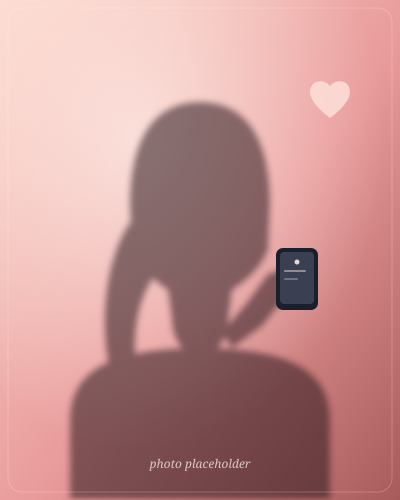

Online
Norge

Single kvinner i Norge vil møtes for sex
Emma
Søker uforpliktende møter denne uken.
Denne siden inneholder innhold ment for voksne. Du må bekrefte alder for å fortsette.
Ved å fortsette godtar du våre vilkår og personvern.